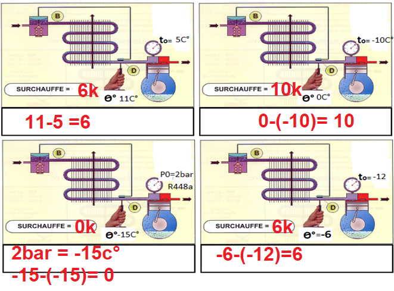

Module de renforcement — pas de tâche d'atelier ancrée ce jour
Savoirs
S5.1 Systèmes thermodynamiques à détente directe
Savoir-être
Rigueur du raisonnement · honnêteté de l'auto-positionnement
Compétence
Découverte — non remontée module de renforcement du savoir S5.1, préparatoire au module atelier A2-c (mesure réelle de la surchauffe au banc)
Ce que ce document ajoute au cours élève
Ce document reprend exactement la même numérotation que le document
élève (observations 1 à 3, questions, exercices 1 à 3) et y ajoute les réponses attendues, les points de
vigilance, la conduite minutée en 4 phases et la différenciation. Aucune valeur numérique non autorisée
n'est utilisée : le seul seuil chiffré donné aux élèves est la surchauffe 5-10 K. Le
sous-refroidissement (encadré orange du schéma) est volontairement non traité ici : il fait l'objet du
module T2. Toute autre grandeur (pression de service, débit, etc.) reste hors périmètre de ce module.
Méthode pédagogique du module
Cours actif en 4 phases : accroche par une situation de chantier, découverte
guidée où l'élève observe et cherche avant que le professeur nomme, application par des exercices
courts à partir de valeurs fournies (aucun calcul de conversion pression→température n'est demandé : les
températures de saturation sont toujours données), puis trace écrite personnelle. Bloom CAP 1→3 (connaître,
comprendre, appliquer un calcul guidé simple).
Trame horaire — module 1 h (recomptée ligne à ligne)
Durée
Phase
Contenu
Module théorie — 1 h 00 (pas de préparation de chantier atelier)
5 min
1. Accroche / situation
Lecture collective de la situation : relevé BP → T° saturation 0 °C, thermomètre de contact → 7 °C sur l'aspiration. Question de départ posée à l'oral puis notée par chacun (« et si les deux températures étaient égales ? »). Ne pas donner la réponse : la garder en tension jusqu'à la phase 4.
20 min
2. Découverte
Lecture guidée du schéma « croix du frigoriste » (observations 1-2) : l'élève localise le détendeur et décrit ce qui entre/sort, avant que le professeur ne nomme « détente ». Mise en commun orale courte, puis le professeur formule la notion (encadré « Ce que fait le détendeur »). Lecture guidée du schéma « surchauffe/sous-refroidissement » (observation 3) : l'élève repère la formule affichée dans l'encadré bleu et la recopie. Le professeur nomme et formalise la définition de la surchauffe et son rôle protecteur du compresseur.
25 min
3. Application
Exercice 1 (4 min) : repérage du détendeur sur schéma, individuel, correction flash à l'oral. Exercice 2 (18 min) : démarche pas-à-pas puis calcul guidé de 4 surchauffes réelles à partir du schéma « 2 FCA Révision surchauffe », comparaison au seuil 5-10 K, correction au tableau avec un élève au tableau pour le cas 3 (surchauffe nulle, hors plage). Exercice 3 (3 min) : vrai/faux individuel, correction flash main levée.
10 min
4. Synthèse / trace écrite
Retour sur la question de départ de l'accroche (réponse : si T mesurée = T saturation, surchauffe = 0 K, risque de liquide au compresseur). Chacun complète sa fiche de trace écrite avec ses propres mots, puis s'auto-positionne 0-4 sur S5.1.
Total : 5 + 20 + 25 + 10 = 60 min exactes, conforme à la
trame « Module THÉORIE — 1 h » du cadrage S11.
Question de départ — Que se passerait-il si le thermomètre affichait
exactement 0 °C, la même valeur que la température lue au manomètre ?
Réponse attendue : la surchauffe serait alors de 0 K (7 °C − 7 °C, ou ici 0 °C − 0 °C dans le
cas limite). Cela signifierait qu'on ne peut pas garantir que tout le fluide est vaporisé : à 0 K de
surchauffe, il pourrait rester des gouttelettes de liquide dans la vapeur aspirée par le compresseur.
Ne pas donner cette réponse tout de suite : la garder en tension jusqu'à la phase 4 (synthèse), après
que la notion de surchauffe aura été construite en phase 2.
Corrigé — découverte, le détendeur (observations 1-2)
Observation 1 — Entre quels deux organes le détendeur est-il placé ?
Que note-t-on sur ce qui arrive au détendeur (repère 2) et ce qui en sort (repère 3) ?
Réponse attendue : le détendeur est placé entre la ligne liquide (sortie condenseur, repère 2)
et l'évaporateur (repère 3). Ce qui arrive (repère 2) : du fluide liquide haute pression. Ce
qui en sort (repère 3, ligne en tirets bleus) : du fluide en basse pression.
Point de vigilance — Certains élèves confondent détendeur et
compresseur (les deux « organes du milieu » sur le schéma). Bien faire repérer que le détendeur est du côté
liquide (traits orange pleins) et le compresseur du côté gaz (aucun trait diphasique).
Observation 2 — Dans quel état le fluide entre-t-il dans le détendeur ?
Dans quel état ressort-il côté BP ?
Réponse attendue : d'après la légende du schéma (« Haute pression — gaz chaud (1) puis liquide (2) » /
« Basse pression — diphasique (3) puis gaz (4) »), le fluide entre liquide (repère 2) et ressort
diphasique (mélange liquide/vapeur, repère 3), avant de devenir entièrement gazeux plus loin dans
l'évaporateur (repère 4).
Point de vigilance — Le mot « diphasique » est nouveau pour beaucoup
d'élèves de CAP : l'associer systématiquement à l'image « mélange liquide + vapeur, comme de l'eau qui bout
encore avec des bulles et du liquide en même temps ».
Question — Pourquoi le détendeur ne doit-il pas laisser passer trop de
fluide liquide d'un coup vers l'évaporateur ?
Réponse attendue : si trop de liquide arrive d'un coup, l'évaporateur n'a pas le temps ni la surface
d'échange suffisante pour le vaporiser entièrement avant la sortie : du liquide non évaporé risquerait alors
de continuer jusqu'au compresseur, ce qui est dangereux pour lui (voir feuille 3).
Formule à faire ressortir (encadré « Ce que fait le détendeur »)
Ne pas mentionner de valeur numérique de
pression ou de température ici : ce sont les seuils de surchauffe (5-10 K, feuille 3) qui sont chiffrés dans
ce module, pas les niveaux de pression du détendeur lui-même.
Corrigé — découverte, la surchauffe (observation 3)
Observation 3 — Avec quelle formule calcule-t-on la surchauffe, d'après
l'encadré bleu du schéma ?
Réponse attendue :Surchauffe = T mesurée − T° de saturation (BP), exactement la formule
affichée dans l'encadré bleu du schéma « Surchauffe et sous-refroidissement ».
Point de vigilance — Ne pas laisser confondre avec la formule du
sous-refroidissement (encadré orange, ordre des termes inversé : T° de saturation HP − T mesurée). Les deux
formules se ressemblent mais ne se calculent pas au même endroit du circuit ni dans le même sens : c'est
volontairement laissé de côté ce jour, réservé au module T2.
Question — Pourquoi est-ce grave si du liquide arrive au compresseur
?
Réponse attendue : un compresseur est conçu pour comprimer un gaz, qui se laisse comprimer
(compressible). Un liquide est quasiment incompressible : s'il en arrive dans la chambre de
compression, il peut provoquer un coup de liquide — un choc mécanique brutal qui peut casser des
pièces internes du compresseur (clapets, bielles selon la technologie). La surchauffe garantit que le fluide
aspiré est bien 100 % vapeur, sans aucune trace de liquide, avant d'entrer au compresseur.
Point de vigilance — C'est le cœur de la notion du module : faire
reformuler par plusieurs élèves avec leurs propres mots avant de passer aux exercices, pour vérifier que le
lien « surchauffe garantit l'absence de liquide » est bien construit, pas seulement mémorisé.
Le seuil 5-10 K — ce qu'il faut faire dire aux élèves
Cas
Ce que cela signifie
Surchauffe proche de 0 K ou négative
Risque de liquide non vaporisé arrivant au compresseur : danger de coup de liquide.
Surchauffe entre 5 et 10 K
Fonctionnement normal attendu : tout le fluide est vaporisé, sans excès.
Surchauffe bien au-delà de 10 K
L'évaporateur n'est pas assez alimenté en fluide (débit du détendeur trop faible) : perte de puissance frigorifique, mais pas de danger direct pour le compresseur.
Seul le seuil 5-10 K est donné aux
élèves. Si un élève cite une autre valeur (vue ailleurs, sur une notice ou en stage), la valider comme
« possible selon la plaque signalétique ou la notice du constructeur, à faire confirmer », sans jamais la
présenter comme une règle générale.
Corrigé — Exercice 1 (replacer le détendeur sur la croix vierge)
Le détendeur se replace À GAUCHE de la croix. La flèche de circulation qui le
traverse vient de la ligne liquide — elle descend du condenseur, EN HAUT — et repart vers
l'évaporateur, EN BAS. Les trois autres organes complètent la croix : condenseur EN HAUT,
compresseur À DROITE, évaporateur EN BAS.
Le fluide tourne donc ainsi : compresseur (droite) → condenseur (haut) → détendeur (gauche) →
évaporateur (bas) → retour au compresseur.
La convention ne se négocie pas — condenseur en HAUT ·
compresseur à DROITE · détendeur à GAUCHE · évaporateur en BAS. C'est la disposition de la profession
et celle de tous les schémas de constructeur. Un élève qui prend l'habitude de dessiner la croix autrement
se retrouvera en difficulté dès qu'il aura un vrai plan sous les yeux. Corriger systématiquement.
Point de vigilance — Correction flash à l'oral (5 min) : un élève
vient placer le détendeur au tableau et justifie, les autres vérifient leur croix. Ne pas s'attarder si la
classe a majoritairement réussi — l'essentiel du temps est sur les exercices 2 et 3. En revanche, si le
détendeur est mal placé chez plusieurs élèves, le reprendre maintenant : toute la suite du module
(surchauffe, réglage) repose sur le fait de savoir où il est et ce qu'il sépare.
Corrigé — Exercice 2 (calcul guidé de surchauffe, 4 cas réels)

Version corrigée, à projeter après la mise en commun.
Cas
Calcul
Résultat
Dans la plage 5-10 K ?
1
Surchauffe = θs − t0 = 11 °C − 5 °C
6 K
Oui, dans la plage.
2
Surchauffe = θs − t0 = 0 °C − (−10 °C)
10 K
Oui, limite haute de la plage.
3
Surchauffe = θs − t0 = −15 °C − (−15 °C)
0 K
Non, hors plage (trop faible).
4
Surchauffe = θs − t0 = −6 °C − (−12 °C)
6 K
Oui, dans la plage.
Question — Le cas 3 donne une surchauffe de 0 K. Que risque-t-on, et
que faut-il faire avant de continuer ?
Réponse attendue : une surchauffe de 0 K (bien en dessous de 5 K) signale un risque de liquide non
vaporisé arrivant au compresseur (coup de liquide). Il faut alerter/faire valider par le professeur ou
le responsable avant toute mise en service prolongée, et vérifier le réglage du détendeur (ce réglage
précis sera manipulé plus tard, au module atelier A2-c).
Point de vigilance — Le cas 3 est volontairement hors plage
pour vérifier que les élèves ne valident pas automatiquement toute valeur calculée : faire un élève au
tableau pour ce cas précis, insister sur la comparaison au seuil, pas seulement sur le calcul. Le cas 2
(10 K) est la limite haute exacte de la plage : à faire justifier explicitement (« dans la plage » car la
borne haute est incluse). Erreur fréquente : soustraire dans le mauvais sens avec les nombres négatifs
(oublier que « − (−15) » donne « + 15 », pas « − 15 ») — reprendre au tableau si l'erreur apparaît.
Corrigé — Exercice 3 (vrai/faux)
Affirmation
Réponse
Le détendeur est placé entre le condenseur et le compresseur.
Faux — entre la ligne liquide (condenseur) et l'évaporateur.
La surchauffe se mesure à la sortie de l'évaporateur.
Vrai.
Une surchauffe de 0 K signifie qu'il n'y a aucun risque pour le compresseur.
Faux — c'est l'inverse : 0 K signale un risque de liquide non vaporisé.
Le détendeur fait chuter la pression et la température du fluide.
Échelle FrigorX : 0 Non évalué · 1 Non acquis · 2 En cours
d'acquisition · 3 Acquis · 4 Parfaitement maîtrisé. Grille légère, statut Découverte — non
remontée sur École Directe : elle sert de repère personnel à l'élève avant le module A2-c, pas d'évaluation
sommative.
Savoir
0
1
2
3-4
S5.1 Rôle du détendeur et notion de surchauffe Découverte — non remontée
Compétence non observée ce jour.
Ne situe pas le détendeur sur un schéma et/ou ne sait pas écrire la formule de la surchauffe.
Situe le détendeur et calcule une surchauffe avec l'aide du professeur ou d'un pair.
Situe seul le détendeur, calcule seul une surchauffe à partir de valeurs fournies et la compare correctement au seuil 5-10 K (niveau 4 : explique en plus pourquoi la surchauffe protège le compresseur).
Différenciation
Profil
Adaptation
Consolidation
Fournir la formule de la surchauffe déjà écrite en haut de l'exercice 2 (au lieu de la faire recopier depuis le schéma) ; se limiter aux cas 1 et 2 (dans la plage) et traiter les cas 3 et 4 collectivement au tableau plutôt qu'en autonomie.
Standard
Déroulement tel que décrit dans le document élève, les 4 cas de calcul en autonomie guidée, correction collective.
Approfondissement
Demander en plus : « à quel autre endroit du circuit mesure-t-on une grandeur analogue, avec quelle différence de sens dans le calcul ? » (amorce du module T2, sans donner le seuil 4-8 K du sous-refroidissement, réservé à T2).
FLE
Vocabulaire clé affiché au tableau avec pictogramme (détendeur = flèche qui rétrécit ; surchauffe = thermomètre + petit « + ») ; formule de la surchauffe présentée aussi sous forme de schéma fléché (T mesurée → moins → T saturation → égale → surchauffe) en plus du texte ; phrases courtes dans les questions à l'oral.
TDAH / DYS
Cacher les cas 3 et 4 du tableau (feuille de papier ou volet) tant que les cas 1 et 2 ne sont pas traités, pour éviter la surcharge visuelle du tableau à 4 lignes ; zones de réponse bien délimitées comme dans le document élève ; pause courte annoncée entre la phase 2 (découverte) et la phase 3 (application) si besoin, sans rallonger le total de 60 min.
Lien avec la suite de la séquence
Le module T2 reprend le schéma « surchauffe/sous-refroidissement » pour traiter l'encadré orange
(sous-refroidissement, seuil 4-8 K) et la notion d'incondensables ;
Le module atelier A2-c mesure réellement la surchauffe au banc, avec un vrai manomètre BP et un
vrai thermomètre de contact : ce module T1 en est le prérequis théorique direct ;
Le carnet de bord F3 peut accueillir une trace courte du jour si l'enseignant le souhaite (non
obligatoire pour ce module).
D'après : schéma
« Surchauffe et sous-refroidissement » et schéma « La croix du frigoriste » (F. Henninot) ; exercice 2 —
« 2 FCA Révision surchauffe » et son corrigé (F. Henninot).